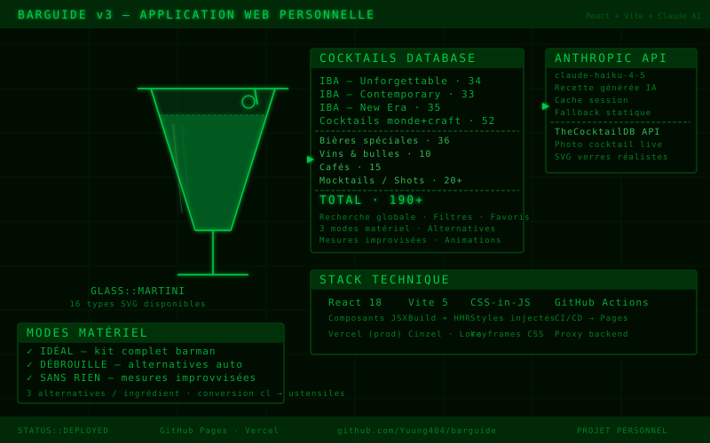

BARGUIDE v3

CONTEXTE & ORIGINE
BarGuide est une application web de guide bar que j'ai conçue et développée entièrement seul, en dehors de tout cadre scolaire. L'idée est simple : avoir à portée de main les recettes de tous les cocktails officiels IBA, les bières du monde, les vins, les cafés et les shots — avec des recettes générées à la demande par l'IA Claude (Anthropic).
Ce projet m'a permis de me lancer concrètement dans le développement front-end avec React, d'apprendre à intégrer une API d'IA en production, et de déployer une application complète en CI/CD autonome.
CE QUE J'AI RÉALISÉ
1. Architecture de l'application (React + Vite)
J'ai structuré le projet from scratch : point d'entrée
main.jsx, composant principal
App.jsx qui gère l'UI et les données, et module
api.js dédié aux appels Anthropic. Aucune librairie
de composants — tout le CSS est injecté via CSS-in-JS avec des keyframes maison.
2. Base de données cocktails (190+ références)
J'ai constitué manuellement la base de données :
102 cocktails IBA officiels (Unforgettable, Contemporary, New Era),
52 cocktails du monde et craft (Espagne, Mexique, Pérou, UK, NYC…),
36 bières spéciales (Trappiste, Sour, NEIPA, Gueuze, Bock…),
10 vins et bulles, 15 cafés, 20+ mocktails, shots, sangrias et digestifs.
3. Intégration API Claude (Anthropic)
Chaque fiche cocktail génère sa recette à la demande via
claude-haiku-4-5. J'ai implémenté un système de
cache session pour éviter les appels redondants, et un fallback sur des recettes statiques
pré-enregistrées en cas d'indisponibilité de l'API.
4. Intégration TheCocktailDB
Pour les cocktails IBA, j'ai connecté l'API publique TheCocktailDB afin d'afficher
une photo réelle du cocktail sur chaque fiche.
5. Système de verres SVG réalistes
J'ai créé 16 types de verres différents en SVG (Martini, Old Fashioned, Highball, Coupe,
Shot, Pinte, Tulipe…) avec rendu liquide et reflets. Chaque fiche affiche
le verre idéal + 2 alternatives cliquables.
6. Modes matériel
L'app propose 3 modes selon ce que l'utilisateur a chez lui :
▸ IDÉAL — recette avec kit barman complet
▸ DÉBROUILLE — 3 alternatives par ingrédient manquant
▸ SANS RIEN — guide de mesures improvisées
(conversion cl → ustensiles du quotidien)
7. Recherche et filtres
Recherche globale instantanée sur le nom, l'origine, les ingrédients et la catégorie IBA.
Filtres par sous-catégorie. Animations fluides : cartes en cascade, flottement du fond,
modal animée, effets hover glow.
8. CI/CD et déploiement
Pipeline GitHub Actions pour le build et le déploiement automatique sur GitHub Pages à
chaque push sur master. L'app est également déployée sur Vercel en production,
avec un proxy backend pour ne pas exposer la clé API Anthropic côté client.
ÉVOLUTION DU PROJET
Le projet a évolué par itérations successives, chaque commit correspondant à une fonctionnalité ou amélioration concrète :
▸ v1 — Prototype initial : 38 cocktails, génération IA basique,
interface minimaliste
▸ v2 — Ajout GitHub Pages, test Gemini API (tier gratuit),
puis retour sur Claude Haiku pour la qualité des recettes
▸ v3 — Refonte complète : +190 références, icônes SVG verres,
modes matériel, cache session, TheCocktailDB, animations, Vercel prod
COMPÉTENCES DÉVELOPPÉES
▸ Développement front-end React 18 (composants, state, props, hooks)
▸ Bundling et configuration Vite 5 (HMR, build prod, variables d'env)
▸ Intégration d'API IA (Anthropic Claude, gestion des headers, cache)
▸ Création de SVG complexes (formes, dégradés, animations)
▸ CI/CD avec GitHub Actions (workflow build + deploy automatisé)
▸ Déploiement multi-plateforme (GitHub Pages + Vercel)
▸ Sécurité API : proxy backend pour protéger les clés en production
▸ Gestion de projet solo : conception, développement et maintenance autonomes